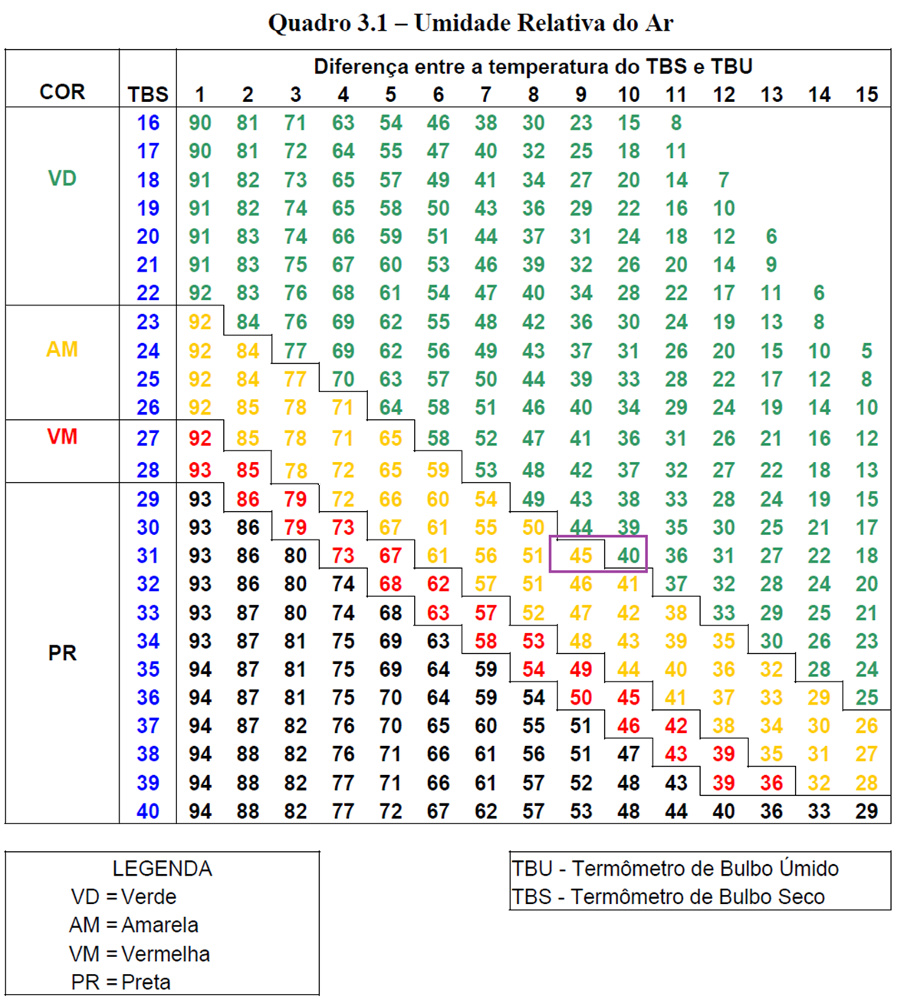

As informações, apresentadas nesta página, visam proporcionar, de maneira prática e acessível, aos militares da Força Aérea Brasileira, uma estimativa dos riscos à saúde humana, ocasionados por determinados aspectos climáticos, durante a prática de atividade física.
Esta ferramenta é meramente informativa e não substitui a consulta às fontes oficiais!
Fatores climáticos específicos influenciam o desempenho físico e podem alterar os procedimentos da prática de treinamento físico. Altas temperaturas e elevada umidade relativa do ar, por exemplo, podem provocar excessiva sudorese e distúrbios térmicos fisiológicos em curto espaço de tempo, gerando riscos à saúde ou até à vida. Por isso, as condições climáticas e meteorológicas podem e devem determinar adaptações de horários, locais e uniformes para a prática de treinamento físico.
Essas adaptações são orientadas por órgãos específicos, como a Comissão de Desportos da Aeronáutica (CDA) e a Defesa Civil. O uso rotineiro dessas fontes de informação, no entanto, pode representar um desafio frente às rotinas agitadas das organizações militares. A correta aplicação das orientações da CDA, por exemplo, exige contato com órgãos de Controle de Tráfego ou de Meteorologia para a obtenção de dados meteorológicos, os quais devem ser plotados em tabela específica, conforme item 3.6.1.5 da NSCA 54-5/2020, a fim de se identificar condutas preventivas para a prática de atividade física. Além disso, as contínuas mudanças nos parâmetros meteorológicos, que, por vezes, podem acontecer de forma célere e acentuada, podem alterar rapidamente as condutas preventivas necessárias, e o acompanhamento dessas alterações climáticas pode se tornar um obstáculo. Por isso, a Subdivisão de Estudos e Projetos, juntamente com o Centro Meteorológico Integrado, ambos do CIMAER, criaram esta página, que proporciona aos militares da Força Aérea Brasileira, de maneira prática, acessível e continuamente atualizada, uma estimativa das condutas preventivas para a prática de atividade física nas organizações militares que possuem Estações Meteorológicas de Superfície (EMS).
As orientações aqui apresentadas são baseadas duas fontes:
1 - NSCA 54-5/2020, especialmente os Quadros 3.1 e 3.2; e
2 – Recomendações dos órgãos de defesa civil, derivadas de orientações da Organização Mundial da Saúde.
Relativamente às orientações da NSCA 54-5/2020, importa esclarecer que o método utilizado para estimar as condutas preventivas para a prática de atividade física, conforme Quadro 3.1 do referido documento, tem como base dados de Temperatura do Bulbo Seco (TBS) e de Temperatura do Bulbo Úmido (TBU), visando obtenção da Umidade Relativa do Ar (URA), o que dificulta a automatização do processo, visto que os informes meteorológicos METAR e SPECI, gerados pelas Estações Meteorológicas de Superfície (EMS), não possuem TBU. Assim, para estimar de maneira automatizada as condutas preventivas, é realizado cálculo da URA a partir da TBS e da Temperatura do Porto de Orvalho (TPO), ambas presentes nos supracitados informes meteorológicos. Em consequência, por vezes, o valor de URA calculada não coincidirá com os valores discretizados (em intervalos variáveis) de URA plotados no Quadro 3.1 da NSCA 54-5/2020. Nesses casos, as condutas preventivas são estimadas por interpolação dos dados de URA plotados no Quadro 3.1.
Como exemplo, consideremos uma TBS de 31ºC e uma TPO de 17ºC. A Umidade relativa, nessas condições, é calculada em 43%. Entretanto, os valores de URA constantes no Quadro 3.1 (vide imagem abaixo) mais próximos de 43%, para uma TBS de 31ºC, são 45% e 40%, sendo que o primeiro representaria condutas preventivas diferentes do segundo (código de cores Amarelo para o primeiro e Verde para o segundo). Por interpolação dos dados, entende-se que o valor de 43% representa condições intermediárias entre 45% e 40%, estando mais próximo de 45%, motivo pelo qual, para TBS de 31ºC e URA de 43% esta página apresentará código de cores Amarelo.
Assim, as informações aqui apresentadas representam uma estimativa, porém bastante precisa, e cuja utilização prática pode não diferir, na maioria dos casos, do método recomendado pela NSCA 54-5/2020, visto que essa norma também se utiliza de aproximações (arredondamento de valores), conforme consta na letra “b” de seu item 3.6.1.5.
Relativamente às orientações da Organização Mundial da Saúde, cabe destacar a sinalização de complicações alérgicas e respiratórias em casos de URA muito baixa, motivo pelo qual, nessas condições, os órgãos de Defesa Civil dos Estados Brasileiros podem emitir Alertas com recomendações a serem seguidas, visando preservar a saúde humana. Tais recomendações são estabelecidas com base em valores específicos de URA, mas a decisão de emissão dos Alertas também pode depender da duração mais ou menos prolongada da condição adversa de URA. Por isso, para determinados níveis críticos de URA, esta página recomendará a verificação de possíveis orientações emitidas pelos órgãos de Defesa CIVIL, a fim de alertar a autoridade responsável pela Organização Militar ou o militar responsável pela condução do treinamento físico sobre a possibilidade da existência de Alertas emitidos por órgão oficiais em sua região.
Por fim, é importante ressaltar que qualquer informação aqui apresentada não substitui nem prevalece sobre as orientações provenientes dos órgãos oficiais.